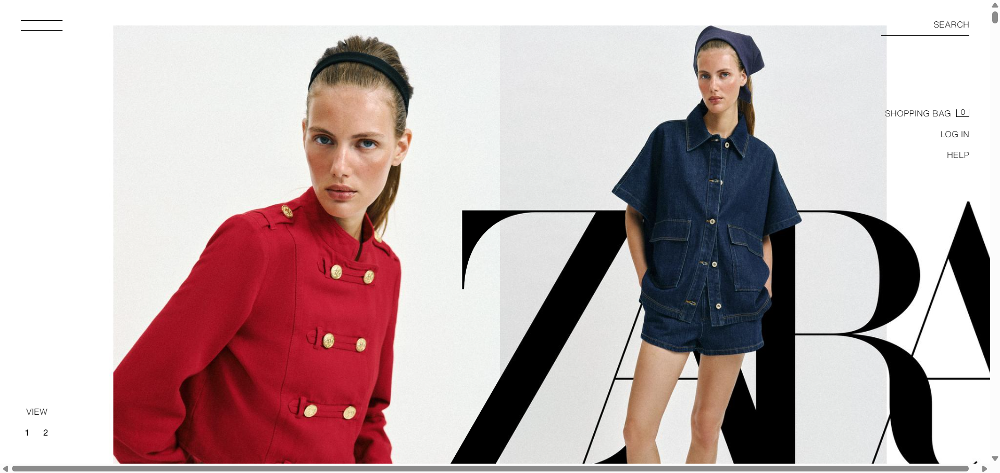
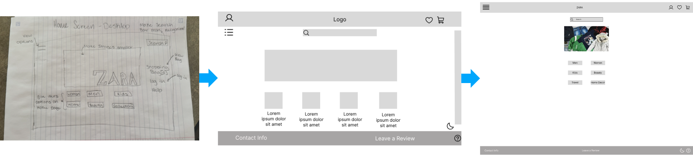
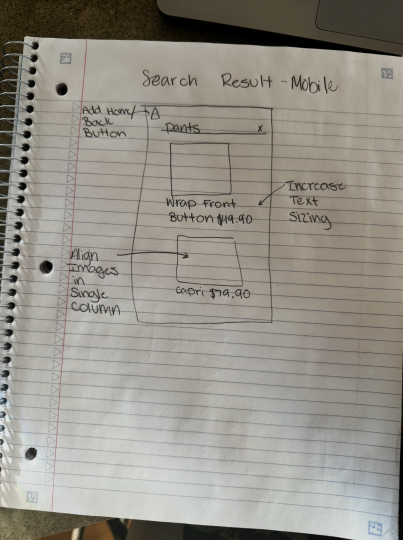
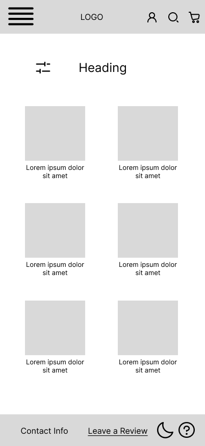
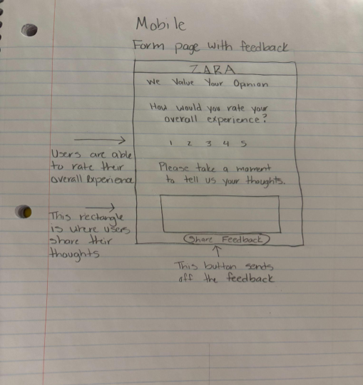
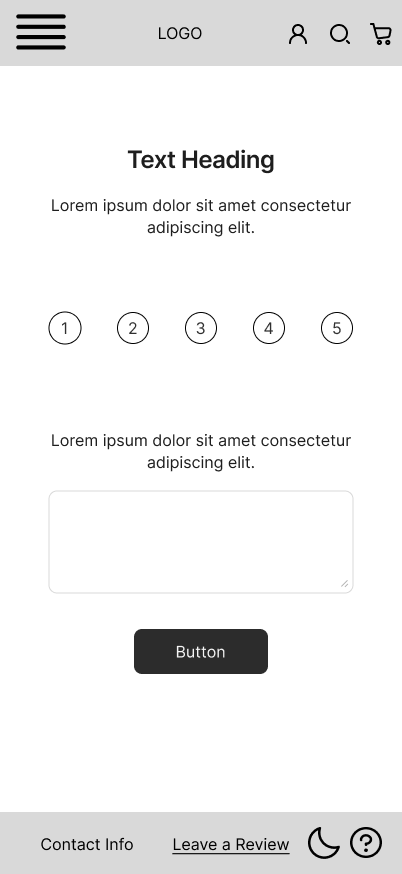
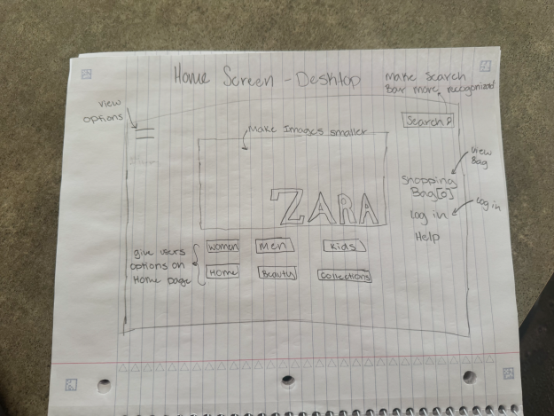
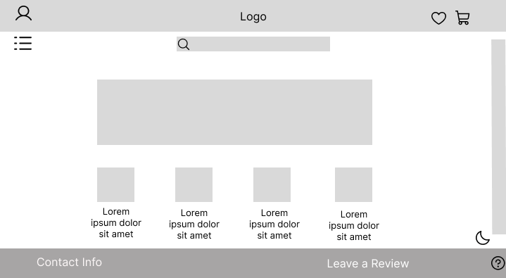
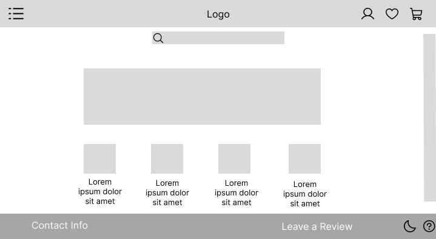
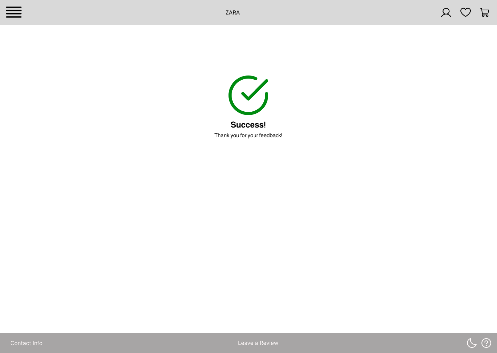

Alongside a team of three other members, we were tasked with researching websites, identifying ones that violated design principles, and creating a redesign of that website. We looked at many online clothes shopping sites and chose Zara as the website with the worst violations.

The team examined Zara's website and compiled our critiques. The image above clearly shows the issues we described. Here are some things we noticed:
Every one of these issues has an extremely negative impact on user experience and makes the website frustrating to use. These critiques would serve as the basis for our design decisions in the following phases of the redesign process.
The design process went through three phases: low-fidelity sketches, low-fidelity wireframes, and a high-fidelity UI prototype. The image below shows the evolution of the home page from the initial low-fidelity sketch to the low-fidelity wireframe and finally to the high-fidelity prototype.

The next section will go into more depth about each step in the phase, including decisions made and how we implemented feedback from testing.
The team conducted three phases of testing for each step in the redesign process. In each phase, participants were asked to perform tasks that reflected a user flow. The team observed the participants and noted where there was hesitation or confusion. Then, we asked the participants questions about their experience to get additional feedback.
The first testing phase had five participants, and it covered the sketches and helped transform those sketches into low-fidelity wireframes. The following are images depicting the design before the change and after the change.

Before

After
We added a filter button on the left hand side of the search results page so that users could filter down their options, which would give them more control and freedom.

Before

After
We added a circle around the numbers on the rating page to make it apparent to users that they can interact with them, causing less confusion.

Before

After
We moved the shopping cart and login buttons to the right side of the header, which is more familiar for users. This choice would remove confusion and hesitation when the users looked for these icons.
Additionally, we increased the size of the search bar and move it to the middle of the screen, right under the header on the home page. Placing the search bar in this location would allow users to find this essential feature right away.
The second testing phase was more in-depth and concerned the low-fidelity wireframes. For this phase, we had four participants. With the participants’ feedback in mind, we made the following changes to the wireframes:
Before

After
The final phase of testing was conducted on three target-users. From this phase of testing, we decided to add confirmation pages to let users know when they completed a task successfully, which would reduce confusion.

After many rounds of testing and numerous wireframes, we implemented the final product using HTML, CSS, and JavaScript. At current, the website is being hosted on Netlify, and can be found here.